5 Anki: primeiros passos
Antes de mais nada, o que é o Anki?
O Anki é um programa feito pra te ajudar a memorizar coisas. As pessoas o utilizam para memorizar poemas, matérias na faculdade (o Anki é muito comum entre estudantes de medicina), teoria e notação musical e – o nosso caso – palavras em uma língua estrangeira.
Ele funciona por meio de flashcards digitais. Como foi dito anteriormente, flashcards são cartas com uma pergunta na frente e sua resposta no verso. Uma exemplo de pergunta na frente pode ser “Qual é o maior músculo da metade inferior do corpo”, diante da qual o verso seria o “Glúteo Máximo”. No estudo de línguas, o lado da frente da carta poderia ser simplesmente algo como “Actually”, diante do qual o verso seria “Na verdade”; frente: “Wreak havoc”, verso: “Causar caos; causar destruição”. É possível adicionar mais informação além de só uma pergunta, como diretrizes de pronúncia, desenhos, ilustrações ou que quer que seja considerado útil.

Mas isso pode ser muito trabalhoso de fazer à mão, e por conta disso o Anki foi desenvolvido para alavancar o mundo digital em benefício desta tarefa.
Os próximos três capítulos são dedicados ao aprendizado do Anki em três etapas:
- O básico do Anki;
- Aprendermos qual é a lógica por trás desse programa;
- Aprenderemos a sincronizar o Anki no computador e no smartphone, para que possamos cumprir com os nossos objetivos de estudo onde quer que estejamos.
- Como inserir plugins
- Instalaremos um plugin que pode nos ajudar a aprender a pronúncia correta das palavras;
- Como criar novos tipos de carta e editar a aparência do Anki.
- Veremos como criar cartas mais elaboradas;
- Veremos como alterar a aparência dessas cartas para fins estéticos.
Você não precisa aprender tudo de uma vez para começar a usar o Anki: apenas a primeira parte basta. Contudo, eu recomendo que você vá pelo menos até a segunda, pois ela é extremamente útil.
A terceira parte serve para você que quer organizar melhor suas cartas e/ou alterar a aparência delas. A parte da alteração da aparência é um tanto técnica e não será abordada ao fundo, pois ela envolve o uso de HTML e CSS, que estão fora do escopo deste site. Contudo, forneço uma referência para quem quiser aprender o básico dessas tecnologias.
Estes capítulos foram criados tendo em mente pessoas que não possuem elevado grau de fluidez com computadores, e portanto eles são consideravelmente detalhados.
Vamos agora à prática.
A primeira coisa que é necessária é fazer o download do Anki. Isso pode ser feito tanto em um smartphone quanto em um computador. O Anki pode ser utilizado em qualquer um dos dois e é possível criar uma conta no para sincronizar os dois aparelhos, de modo que você possa retomar no celular o que você começou no computador e vice-versa.
Embora ele possa ser utilizado em qualquer aparelho, algumas coisas ou são tornadas mais fáceis com o uso do computador, ou necessitam dele para sem realizadas. Por conta disso, começaremos falando dos computadores.
5.1 Utilizando o Anki no computador
5.1.1 Instalação
É necessário antes de mais nada falar o download do Anki. Isso pode ser feito pelo site, https://apps.ankiweb.net/. Logo ao entrar no site você vai se deparar com um grande botão azul em que está escrito “Download”.
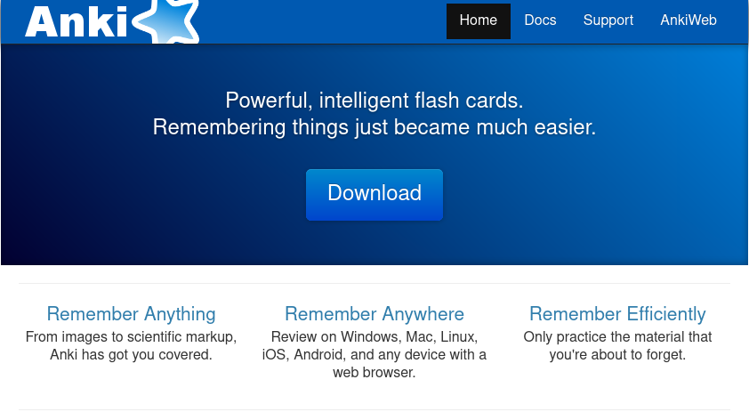
Ao clicar nesse botão, você será levado para uma área da página com várias opções para download. O site provavelmente conseguirá discernir qual sistema operacional você está utilizando (se Windows, Mac ou Linux).
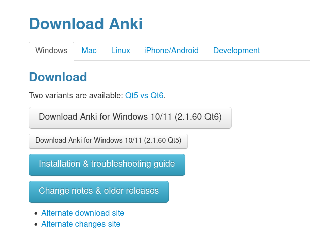
Clique no primeiro ou segundo botão e baixe uma das versões. A diferença entre Qt5 e Qt6 é majoritariamente técnica10 e (pelo menos neste momento) não diferença qual você escolhe.
Após ter feito o download do programa, abra o arquivo que você baixou e siga a instalação normalmente.(detalhar mais essa parte)
5.3 Adicionar: Criando cartas
Você pode explorar baixar um baralho qualquer, ou criar o seu próprio. Há grande vantagem em baixar baralhos prontos: eles nos poupam de um grande trabalho – criar baralhos à mão leva tempo.
Contudo, há uma grande vantagem em criar seus baralhos por conta própria: eles refletem os seus interesses e a sua própria jornada ao longo da língua. Se você gosta de psicologia, você utilizará cotidianamente palavras diferentes das que utilizarão um economista, e vice-versa.
No início pode ser útil aprender as palavras mais comuns. Convém utilizar um baralho pronto com esse conteúdo e ir gradualmente adicionando as palavras que refletem nossas jornadas individuais. Para facilitar este propósito, ofereço [o conjunto de decks que eu elaborei][Apoie este projeto], que vão das 500 às 2000 palavras mais comuns, excluindo cognatos verdadeiros (você não precisa que o Anki te diga que a tradução de “Justice” é “Justiça”, nem que a de “Constitution” é “Constituição”) 11.
Dito isso, vamos aprender agora como elaborar nossas próprias cartas.
Há duas formas de criar cartas: dentro do Anki (processo mais lento, mas mais controlado) e por meio de planilhas. Acredito que o segundo é mais conveniente e confortável, mas, para nos familiarizarmos mais com a interface do Anki, comecemos com o primeiro.
5.3.1 Criando cartas pelo Anki
Ao clicar em “Adicionar”, você se deparará com a seguinte tela:
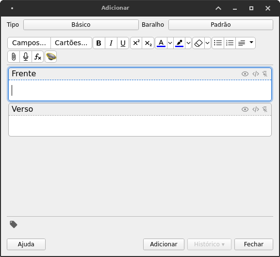
Na parte superior você pode ver o Tipo, que provavelmente está como “Básico” e também o Baralho. O Tipo “Básico” de cartas tem o que você vê no centro da tela – dois campos: Frente e Verso. É possível adicionar mais campos para incluir coisas como imagens, áudio, exemplos de frases em que a palavra é contextualizada etc. Nós aprenderemos a editar e criar os Tipos de baralhos no capítulo Anki: customização de baralhos.
Ao clicar em um desses campos, Frente ou Verso, é habilitado o editor de texto. Você pode adiconar negrito, itálico, mudar as clores das palavras, adicionar tags em HTML, fazer listas, importar imagens, gravar áudio. Após criar a frente e o verso da carta, clique em “Adicionar” na parte inferior do menu.
Os campos foram esvaziados, mas sua carta foi criada. Para ilustrar o exemplo, vou criar seis cartas:
- Actually: na verdade
- Tough: duro, difícil
- Thought: pensei, pensou, pensam, pensa; pensamento
- Though: entretanto; a despeito de
- Through: através
- Thorough: completamente; completo; rigoroso
Os exemplos são simplificados; algumas dessas palavras possuem mais significados. Para “aumentar” o tamanho de um dos campos, basta apertar a tecla Enter no teclado que ele se ajusta.
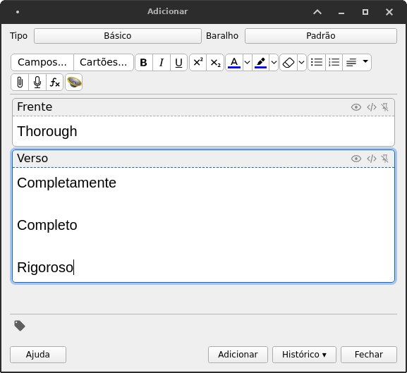
Não se preocupe em fazer os flashcards com perfeição. Eles são importantes, mas o mais importante é a imersão – lembre-se disso. Vale a pena investir tempo, entretanto, em construí-los, principalmente quando nós sabemos que elas podem nos ajudar a cumprir um objetivo de curto prazo – lembre-se da importância de elaborar objetivos, trabalhada no capítulo sobre . Tratarei mais acerca disso em [Diretrizes para elaborar flashcards].
Ao ter criado as cartas, você verá que agora há um número (aqui são seis, pois criei seis cartas) ao lado do baralho “Padrão” (que foi o que eu selecionei; pode ser diferente para você, caso tenha criado outro ou baixado um do AnkiWeb), sob a coluna “Novos”. Clicando no baralho, veremos a seguinte tela:
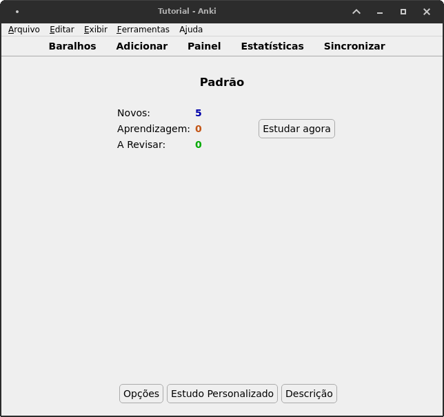
Vamos desmembrar o que significa essa tela:
- São seis novas cartas que estão previstas para serem estudadas hoje. Se eu tivesse um baralho com 6000 cartas, o Anki não me imporia tudo no mesmo dia: ele me passaria um número pré-definido (por mim) de cartas.
- Há 0 cartas marcadas como “Aprendizagem”. Estas são as cartas que eu errei ou que ainda não acertei ao menos duas vezes seguidas hoje.
- Há 0 cartas marcadas como “A Revisar”. Estas são as cartas que eu acertei ao menos duas vezes seguidas no passado.
O Anki é um sistema de repetição espçada. Ele foi elaborado para nos ajudar a dar conta de grandes quantidades de informação que precisam ser memorizadas. Se eu tivesse 6000 cartas em um baralho, eu não deveria ter que revisá-las todos os dias.
O Anki percebe, pela forma como estudamos, quais cartas são mais fáceis e quais são mais difíceis para nós. Às cartas mais fáceis são atribuídos intervalos maiores. Assim, você pode ter 10 cartas para aprender hoje, 30 para revisar hoje, e o restante das 6000 cartas espalhadas em um intervalo de 2 anos. As que você erra mais serão apresentadas mais cedo (hoje ou amanhã) e as que você acerta sucessivamente ganham intervalos cada vez maiores: 2 dias, 5 dias, 11 dias, 3 semanas, 1 mês e meio, três meses, seis, um ano, dois, e assim por diante. Deste modo, é perfeitamente concebível dar conta de um baralho com 6000 cartas ou mais.
Recomendo começar com 10 cartas novas por dia. Para configurar o Anki deste modo, clique em Opções na parte inferior da . Você verá um campo denominado “Novos cartões/dia”. Mude de 20 para 10 e clique em Salvar.
Agora vamos clicar em Estudar agora.
Você será recebido com a primeira carta que você criou. Na imagem abaixo podemos ver a frente da carta “Tough”.
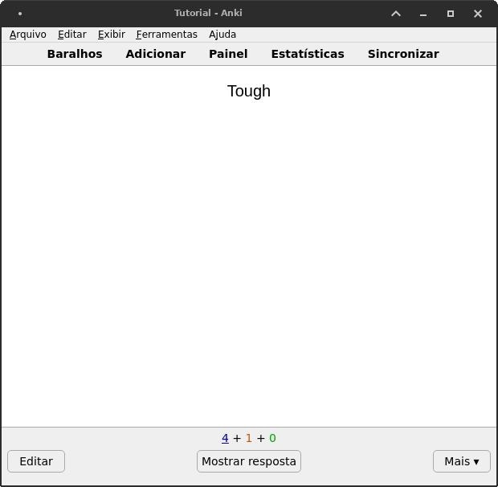
O que você pode ver a princípio é apenas a palavra-desafio. Essa tela te pergunta o seguinte: o que significa “tough”?
O que você quer fazer é tentar lembrar, ou ao menos adivinhar, utilizando o conhecimento que você já tem. Tendo conseguido fazer isso ou não, clique em Mostrar resposta.
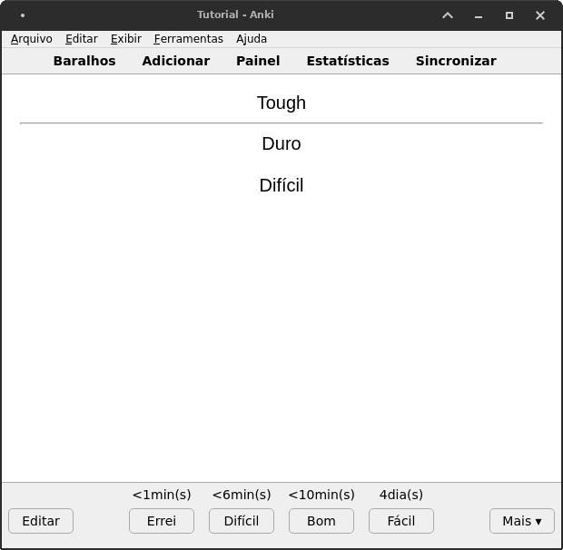
Agora você vê a resposta, logo abaixo da pergunta. O painel em que você clicou em Mostrar resposta agora mudou. Há quatro opções agora: Errei, Difícil, Bom e Fácil. Cada uma delas com um intervalo de tempo: <1min(s), <6min(s), < 10min(s), 4dia(s). Cada uma delas representa o intervalo entre a o clique nesta opção e a próxima vez em que você terá que revisar esta carta.
Se eu clico em “Bom”, “Difícil” ou “Errei”, você verá o número de cartas marcadas como “Aprendizagem” aumentar: este é o significado do número vermelho acima de “Mostrar resposta”. O número azul são as que ainda terei que aprender, e o número verde são as que terei que terei que revisar em decorrência de estudos futuros.
A menos que você altere as configurações do Anki, os intervalos vão todos mudando, com exceção do “Errei”. A lógica é a seguinte:
- Fácil: acrescentar intervalo longo até a próxima revisão desta carta
- Bom: acrescentar intervalo normal
- Difícil: acrescentar intervalo curto
- Errei: zerar intervalo; revisá-la daqui a um minuto ou pouco mais.
De modo que mesmo a carta “Difícil” pode ser revisada apenas daqui a um mês, dependendo da sua frequência e qualidade de estudo.
A ideia é que você responda com sinceridade. Mentir para o Anki é mentir para si mesmo. Assim, clique em Fácil se você acha fácil, clique em Bom se estiver tudo ok, em Difícil se você achou difícil mas acertou, e em Errei caso tenha errado ou não tenha conseguido se lembrar.
Faça isso com todas as cartas do dia. Ao abrir o Anki novamente amanhã (pois utilizar o Anki deve ser um hábito diário), você verá que o número verde (A Revisar) corresponderá às cartas que você estudou ontem.
A aparência das cartas do Anki pode ser… simples demais. É possível customizá-la para torná-la mais rica. Vamos ver como fazer isso em Anki: customização de baralhos.
5.4 Criando cartas em planilhas
Uma forma mais rápida de criar múltiplas cartas de uma só vez é usando um programa de edição de planilhas como o Microsoft Excel, LibreOffice Calc ou Google Sheets. Por motivos de acessibilidade, usarei aqui o Google Sheets.
Mas antes de criar as cartas, é necessário considerarmos que tipo de carta nós vamos criar. É necessário pensar no que haverá nessas cartas.
No menu “Adicionar” do Anki, você pode ver a possibilidade de escolher o Tipo de carta. O Tipo Básico só tem dois campos: “Frente” e “Verso”.
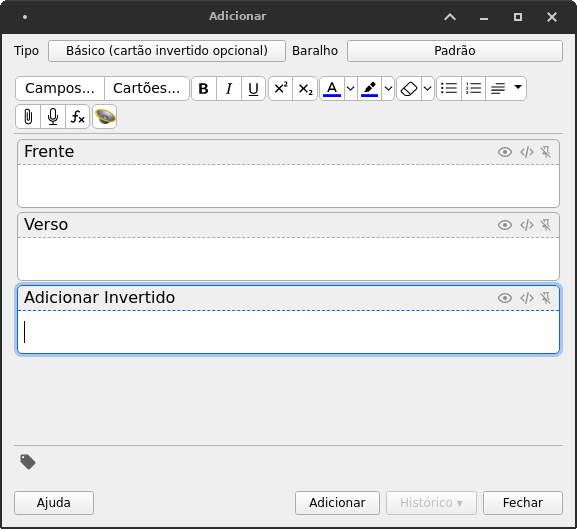
Se você clicar no nome do Tipo e escolher a opção “Básico (cartão invertido opcional)”, você verá um cartão com três campos. Mais para frente veremos como criar um cartão com quantos campos for necessário. A relevância disso para nós agora, entretanto, é uma: a nossa planilha deve corresponder ao Tipo da nossa carta. Se ele tem dois campos, ela deve ter duas colunas.
Vamos ver como fazer isso no Google Sheets. O procedimento é o mesmo em qualquer outro editor de planilhas – usarei este por ser o mais acessível. Caso queira acompanhar, basta ir em https://sheets.google.com e clicar em “Branco” (se você já tem uma conta no Google) para abrir uma planilha nova.
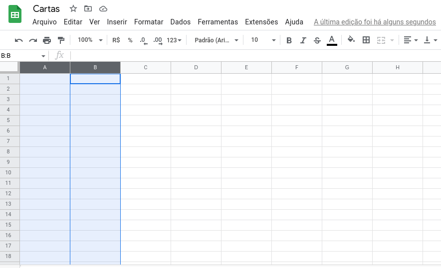
Como o nosso baralho do Tipo “Básico” tem apenas duas colunas, vamos utilizar apenas as colunas A e B – destacadas em azul na imagem acima – para montar nossas cartas.
A vantagem de utilizar uma planilha em vez de utilizar a própria interface do Anki é que planilhas são mais navegáveis. Pode-se preencher os campos da planilha mais rapidamente utilizando atalhos do teclado do que se pode fazer dentro do próprio programa de flashcards. Apertando “Tab” no teclado nós podemos ir para a célula à direita da atual (e “Shift+Tab” para ir para a célula À esquerda); apertando “Enter” nós podemos mover o cursor uma célula para baixo, e “Shift+Enter” faz o movimento inverso. Nós precisamos coletar os dados que nos são necessários até que tenhamos algo mais ou menos assim:
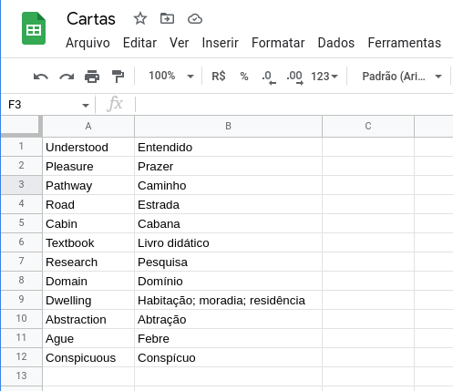
Quando obtivermos isso, precisamos baixar a planilha, ou salvá-la em formato .csv. No Google Sheets, isso pode ser feito clicando em “Arquivo” (na barra de menu na parte superior da tela), “Fazer download” e então “Valores separados por vírgula (.csv)”:
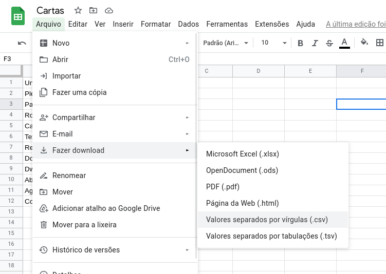
Basta então abrir o Anki e Importar Arquivo, o que pode ser feito pelo botão de mesmo nome na parte inferior do menu “Baralhos” ou então clicando em “Arquivos” (na barra de menu, na parte superior da tela) e então em “Importar”.
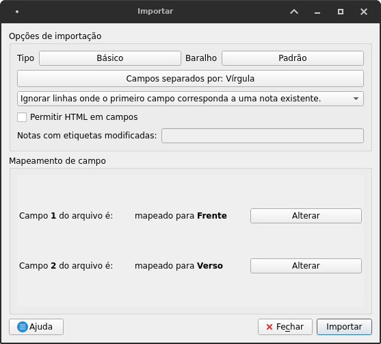
Eis a importância de fazer as colunas das planilhas coincidirem com os campos do seu baralho. A primeira coluna corresponde à “Frente” e a segunda coluna corresponde ao “Verso”. Na seção sobre customização de baralhos nós veremos como usar isso ao nosso favor, mas a princípio o necessário é simples: manter o Tipo como “Básico” e escolher o Baralho em que desejamos inserir estas cartas.
Ao utilizar a interface do próprio Anki para adicionar as cartas, nós podemos usar o editor de texto interno para deixar as palavras em negrito, itálico e coisa do tipo. Nós também podemos fazer isso aqui, mas precisamos marcar a opção “Permitir HTML em campos”, e inserirmos o HTML manualmente nas nossas planilhas. Veremos isso também na seção sobre customização de baralhos.
Planilhas são mais convenientes. Você pode preenchê-las no computador ou no celular, ao passo que utilizar o aplicativo do Anki para smartphones para adicionar cartas não é tão prático. Além disso, você pode simplesmente ir acumulando apenas uma parte das cartas, em vez de ser obrigado a preencher os dois campos de uma vez só, e ir preenchendo o restante conforme necessidade.
Por exemplo, imagine que você esteja aprendendo alemão para estudar filosofia. Existe um certo número de palavras que você conhece na sua língua, mas que desconhece no alemão, que você quer aprender. Neste caso, você pode ir coletando essas palavras aos poucos, no seu tempo, e quando você julgar pertinente você vai atrás do significado delas para então importá-las para o Anki. Neste meio tempo, você vai apenas colecionando os campos do “Verso”:
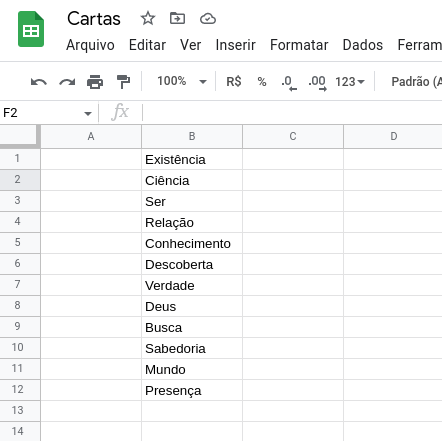
Por outro lado, digamos que você tenha assistido uma peça francesa e percebido várias palavras que se repetem, mas não conseguiu ainda pegar o significado delas. Neste caso, você vai apenas coletando, no seu ritmo, as palavras do campo da “Frente”, e preenche o “Verso” quando julgar pertinente:
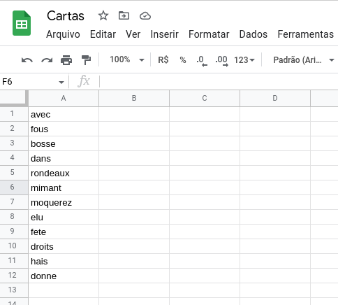
(Inspirado no vídeo “Le pape des fous”.)
Eu pessoalmente acho que utilizar uma planilha para montar as cartas é mais conveniente do que a própria interface do Anki. Aqui, você pode fazer as coisas de forma mais cômoda.
5.5 Práticas para elaborar flashcards
Nesta página tem uma coisa que ficou subentendida: é necessário que você pesquise e monte suas próprias cartas. Sim, mesmo que você utilize um baralho disponibilizado online, é interessante que você monte as suas próprias cartas com o tempo. Esses baralhos vão abordar o que é comum na língua. Os [próprios baralhos que eu elaborei] têm como orientação a frequência das palavras na língua.
Mas existe uma diferença entre as palavras mais frequentemente utilizadas na língua pelas pessoas como um todo e há as que são mais frequentes no seu vocabulário. Isso depende das coisas que você considera importantes. Isso vai depender do seu hobby, da sua profissão, dos seus interesses e das suas necessidades.
Se você for aprender em um curso de inglês, você vai aprender as mesmas palavras que todas as outras. A lógica é encontrar algo de comum. Veja bem: é importante ter algo de comum, justamente para que você possa compreender o que os outros falam e para que os outros possam te compreender de volta, mas é necessário também cultivar o que lhe é peculiar. Se você é um psicólogo, as palavras “mente”, “comportamento”, “ambiente”, “inconsciente”, “pesquisa” e outras coisas do tipo vão ser partes importantes e recorrentes do seu vocabulário. Em inglês, as palavras que a estas correspondem, – “mind, behavior, environment, unconscious, research” – não figuram entre as palavras mais comuns da língua. Esse é o tipo de coisa que você teria que buscar por conta própria.
Claro, você pode ir pela via da insanidade: vou pegar o maior deck que eu encontrar online, digamos, um com 12.000 palavras, e vou aprender todas, na ordem de frequência. Embora eu não ache que isso seja uma má ideia se isso for parte do seu plano, certamente não é uma prática boa se é nisso que consiste todo o seu sistema auxiliar de repetição espaçada.
Ok, como assim? Qual seria a melhor via, então? Exponho: faça paralelamente o seguinte:
- Aprenda palavras comuns, estabelecidas por frequência;
- Trace um objetivo – ler um conto, um texto curto; aprender certas palavras que me são importantes; aprender um determinado número de músicas ou poemas, entre outros – e crie um baralho que te aproxime dele.
Enquanto você rotineiramente aprende as palavras mais comuns, você paralelamente estabelece seus objetivos de curto prazo. Digamos que você queira ler uma12 das Fábulas de Ésopo, o que você poderia fazer é:
- Dar uma primeira lida (imprimir o texto pode ser útil aqui)
- Marcar as palavras desconhecidas
- Anotá-las todas numa planilha
- Aos poucos, no seu tempo, procurar pelo significado delas
- Importá-las para o Anki
- Estudá-las até ter aprendido todas
- Reler o texto
Deste modo, você estabelece os ganchos e as metas e então busca por elas. É um processo bem simples: você aprende as palavras associadas às coisas que são do seu interesse. A chave aqui é o fato de que elas são do seu interesse. É importante traçar metas, pois buscá-las e alcançá-las mantém a nossa motivação. A pura imersão e o aprendizado de vocabulário por frequência pode ser muito produtivo, mas acredito que muitos podem se sentir meio “largados” e “jogados” se não tiverem uma forma mais clara de medir o próprio progresso. Estabelecer esse tipo de objetivo é uma dessas formas.
Portanto, é simples: os flashcards que você monta devem estar associados aos seus objetivos, necessidades e interesses. Você pode ter múltiplos baralhos, digamos: um com as palavras do seu interesse, um frases interessantes que você tenha visto por aí, um com palavras selecionados por frequência, entre outros. Cuidado para não se sobrecarregar, criando múltiplos baralhos com um alto número de cartas novas por dia. Se você for utilizar múltiplos baralhos, module a quantidade de cartas que são reveladas diariamente – lembre-se: o Anki é um esforço diário! – para que isso se encaixe na sua rotina e você não fique sobrecarregado.
Não recomendo, entretanto, aprender múltiplas línguas simultaneamente se a sua intenção for alcançar um nível de compreensão e expressão avançados em ambas as línguas. O motivo disso é simples: aprender uma língua só é trabalho o suficiente, e exige esforço. Aprender duas ou mais ao mesmo tempo apenas resultaria numa difusão dos nossos esforços, o que pode nos deixar sobrecarregados e/ou fazer com que tenhamos um progresso mais lento. Todavia, se um progresso mais lento não for um problema para você, ou se você não quer exatamente “alcançar” um nível de expressão ou compreensão, mas apenas aprender um ou mais textos (digamos, aprender a letra do Ode à Alegria de Beethoven em alemão e alguns poemas em francês), não há por que se preocupar com isso.
5.6 Utilizando o Anki pelo celular
Para encerrar esta sessão, vou abordar como empregar esse sistema auxiliar para uso em um smartphone. Se você usa Android, o Anki pode ser baixado gratuitamente pelo nome de AnkiDroid na Play Store. Entretanto, se você usa iOS, será necessário comprar o aplicativo AnkiMobile na App Store. Uma alternativa para os usuários de iPhone que não querem pagar é acessar o AnkiWeb pelo navegador e fazer os seus estudos por lá – menos confortável, mas certamente válido.
Eu penso que o Anki deve ser utilizado no celular para o simples fim de estudar com comodidade: na cama, no transporte público, no sofá – onde quer que se possa usar o celular tranquilamente. Deste modo não precisamos nos deslocar para o computador para dar cabo na nossa cota diária de estudo.
Dito isso, não acho que o Anki em sua versão mobile deve ser utilizado para criar cartas. Ele não é comodo para esse propósito. Claro, você pode, mas eu recomendo altamente que você deixe para fazer isso no computador se for possível. De qualquer modo, você pode utilizar um aplicativo de planilhas no celular para criar cartas caso esse seja o seu objetivo, e então importá-las para o Anki pela função de importação que também está presente no aplicativo. Porém, a versão mobile do Anki não tem a capacidade de utilizar plugins como o AwesomeTTS (que veremos na próxima página), o que de fato o faz figurar especialmente não como um programa para criação de material, mas sim como um para estudá-lo.
Vou utilizar o AnkiDroid como exemplo.
A lógica interna do AnkiDroid é a mesma que a do Anki para computador: você tem os seus baralhos com as suas cartas, e você as marca de acordo com quão fácil ou difícil você as considera. Abaixo há uma imagem de uma carta criada para estudo do francês, com campos extras, áudio e exemplos da frase em contexto.
Mas o importante aqui é que essa carta não foi criada no AnkiDroid, mas no computador, o qual foi sincronizado com o AnkiDroid pela nuvem. É aqui que ele brilha de verdade. Para sincronizar é necessário ter uma conta no AnkiWeb, que pode ser criada de forma simple – algo que você talvez já tenha feito –. Para entrar ou criar na conta, basta fazer o seguinte:
- Repare no botão de “Sincronizar”, com as setas em círculo e um ponto de exclamação vermelho, na parte superior direita da tela.
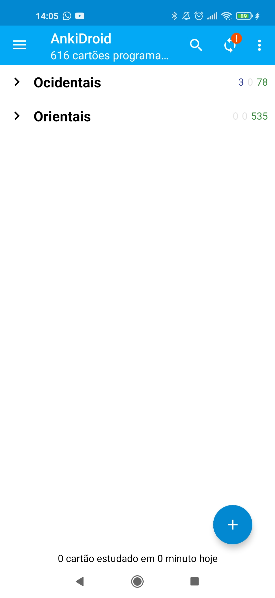
- O aplicativo pedirá que você faça um login. Clique em “Logar”.
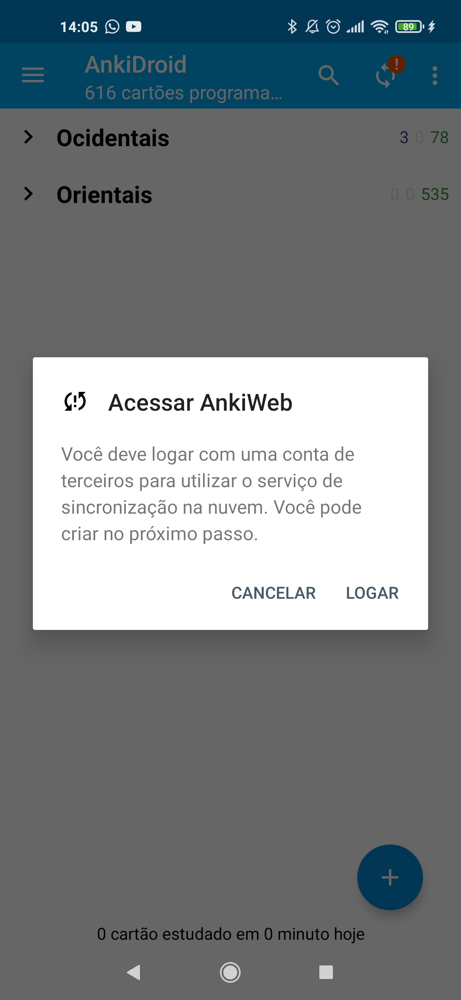
- Coloque o seu e-mail e senha.
Caso você não tenha criado uma conta ainda, clicar em “Inscreva-se” e esta tela será aberta.
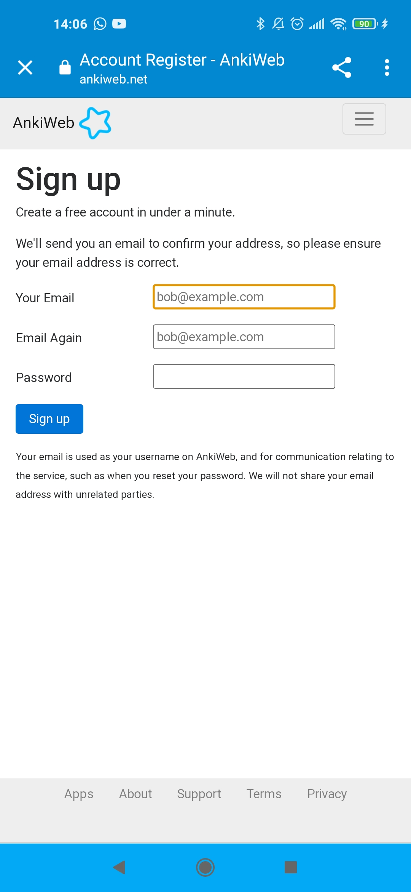
Após ter preenchido com as suas credenciais, basta acessar o seu e-mail e confirmar a conta recém-criada.
Com as mesmas credenciais que você criar nesta tela, você deverá fazer o login tanto no computador quanto no celular. Feito isto, você poderá sincronizar livremente, de modo que você não precisará se preocupar em manter o estudo separadamente.
O Anki na versão para computador, se você tiver feito o login, sincronizará sempre que você abrir ou fechar o programa. No celular, é necessário sincronizar manualmente, apertando no ícone de sincronização (as setinhas em círculo em que clicamos para fazer o login). É possível habilitar a sincronização automática no menu de configurações, fazendo o seguinte:
- Apertar as três barras horizontais no canto superior esquerdo da tela;
- Selecionar o menu “Configurações”
- Selecionar “AnkiDroid – Configurações Gerais”
- Habilitar a “Sincronização automática”.
E voilà! Tudo está pronto. Agora sempre você abrir ou fechar o aplicativo ele efetuará a sincronização.
Atenção: se você não sincronizar sempre que estudar, seja no computador, seja no celular, você pode ter problemas de conflito com o estado do seu baralho. Se houver conflito, você vai ter que apagar um dos estados (ou o que está na Nuvem, ou o que está no aparelho que você está utilizando). Sempre que você sincronizar, o que você acabou de estudar terá ido para a nuvem. Se a última alteração que você tiver feito no seu baralho for a versão que está na nuvem, diante de um tal conflito, selecione “Fazer o Download do AnkiWeb”. Se não for – caso você tenha feito alterações locais que ainda não foram enviadas para a nuvem, e estas forem mais recentes e/ou importantes do que o que está na nuvem – então selecione “Enviar para o AnkiWeb”. Na versão Mobile, ele te perguntará: “qual versão você deseja manter”, e então você deverá selecionar AnkiWeb (o que está na nuvem) ou AnkiDroid (a versão local). O estado diferente do que for selecionado será deletado. É necessário cuidado aqui. Para evitar isso, convém habilitar a sincronização automática, como exposto acima.
Qt é o conjunto de ferramentas utilizados pelos desenvolvedores do Anki para elaborar a interface gráfica do programa. A diferença entre esses pacotes é relevante apenas para quem utiliza certos plugins extras (que não serão abordados aqui), ou para quem os desenvolve.↩︎
há falsos cognatos, entretanto, como “Actually”, que não quer dizer “Atualmente”, mas sim “Na verdade”↩︎
É importante que os objetivos sejam facilmente alcançáveis para manter a motivação, ainda mais considerando que elaborar flashcards é trabalhoso. Se você traçar a meta de ler as cem primeiras fábulas de Esopo, isto seria um peso muito grande sobre os ombros. Se você é um dos tipos que gosta de traçar metas grandiosas, talvez seja bom proceder da seguinte forma: aprender as cinco primeiras, depois as próximas cinco, depois as próxima cinco… E assim por diante. Assim você equilibra a tensão entre “buscar” e “alcançar”, de modo que não seja tão fácil alcançar (e portanto chato) e nem muito longa a busca (e portanto estressante)↩︎